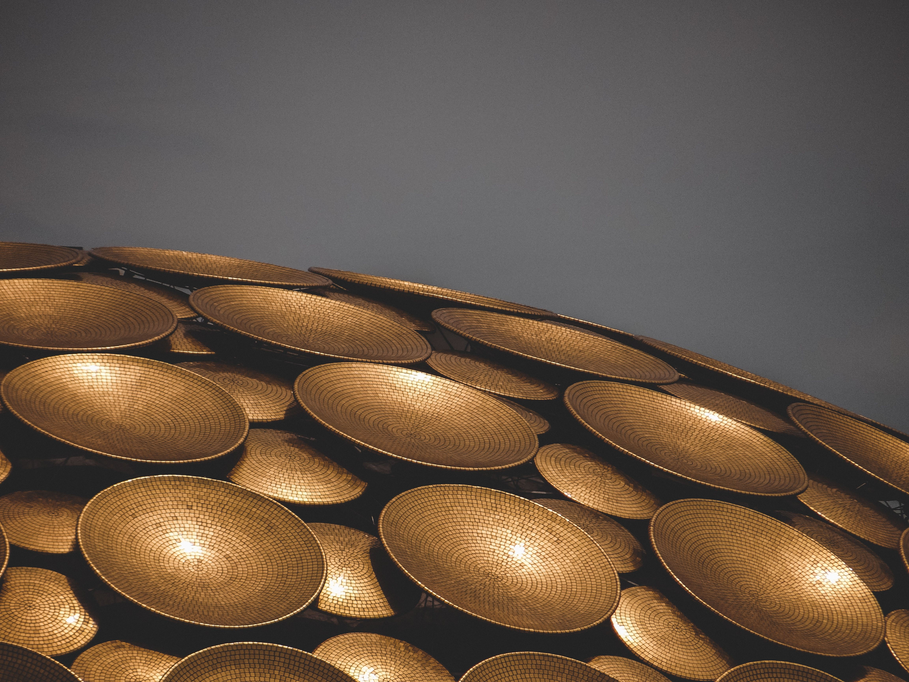

cycling experiences
Curated journeys across India

Curated journeys across India

Experience Nainital through slow travel on two wheels, and make your way to Kainchi Dham at a pace that allows you to truly pause, reflect, and understand the significance of being there.
explore itinerary →
Over three days, we explore Auroville, Sadhana Forest, and Pondicherry by cycle, discovering communities built on sustainability, connection, and shared ideas. Moving at a slower pace, we experience not just the places themselves, but the conversations, stories, and perspectives that make this one of humanity's most fascinating living experiments.
explore itinerary →
We invite you to experience Jim Corbett beyond the safari checklist. Here, the wilderness reveals itself not through speed, but through patience, silence, and presence. Cycle through forest edges, hidden villages, river trails, and forgotten paths where every sound carries meaning and every pause becomes part of the journey.
explore itinerary →
We invite you to experience Pushkar where the creation of the universe began, glitching reality into being. Pushkar doesn't do well with speed; it's a place best known slowly, deeply, without engines or hurry. In this unhurried space, cycle with ease through sacred landscapes, where every turn reveals why slow travel is the only way to truly understand a place.
explore itinerary →